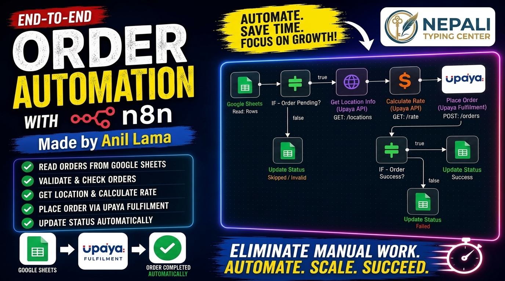

Author: Anil Lama
Published: July 2026

n8n is an open-source workflow automation platform that allows you to connect different applications without writing large amounts of code. You can automate repetitive work, move data between apps, trigger notifications, call APIs, and integrate AI models into business processes.
Businesses spend countless hours performing repetitive tasks such as copying data, replying to emails, updating spreadsheets, and generating reports. AI automation combines intelligent models with workflow automation to reduce manual effort, improve accuracy, and save time.
The easiest way is with Docker. After installation, access the editor in your browser and start building workflows visually using drag-and-drop nodes.
A simple workflow could:
Google Sheets is commonly used as a lightweight database. n8n can read, update, append, and search rows automatically, making it perfect for small business automation.
You can connect OpenAI-compatible APIs or other LLM providers to classify text, generate content, summarize documents, translate languages, or answer customer queries.
One practical workflow is an e-commerce order automation system:
n8n is one of the most powerful automation tools available today. Whether you are a freelancer, developer, entrepreneur, or business owner, learning n8n can dramatically improve productivity. Combining AI with workflow automation opens the door to smarter, faster, and more scalable business processes.
Is n8n free?
Yes, the self-hosted version is open source.
Can beginners learn n8n?
Absolutely. The visual interface makes it beginner friendly.
Can I use AI with n8n?
Yes. You can integrate AI APIs for content generation, summarization, classification, and more.
© 2026 Anil Lama • anillama.com.np